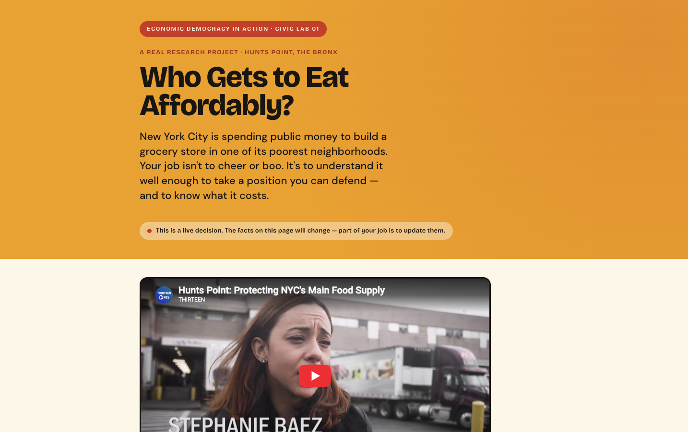

Civic Lab 01 · Food affordability
Who Gets to Eat Affordably?
New York City is investing public money in a grocery store in Hunts Point. Students investigate who the investment serves, what tradeoffs it creates, and what an equitable food system should require—then defend a recommendation grounded in community evidence.
Explore the student-facing lab ↗